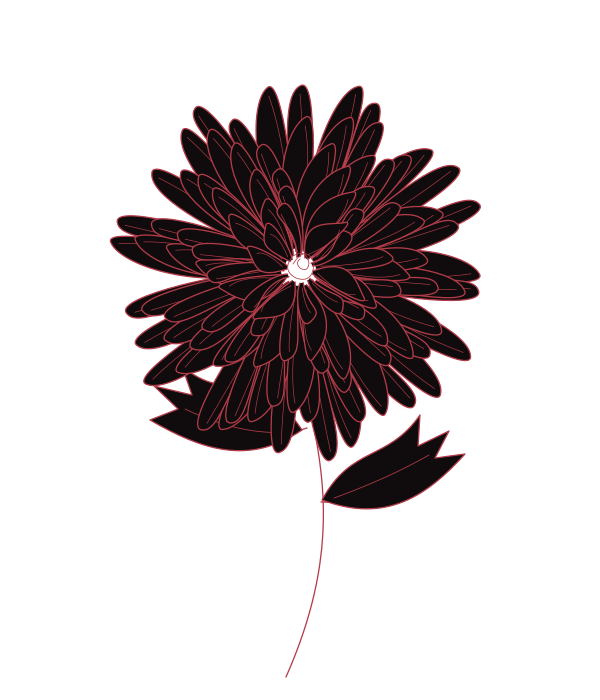
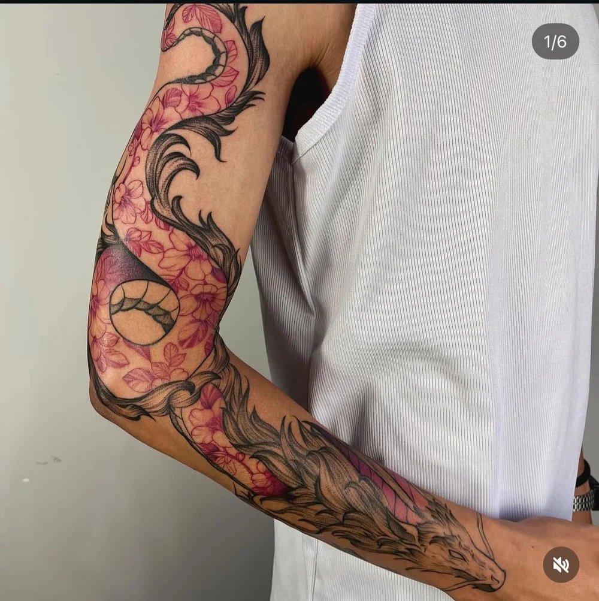
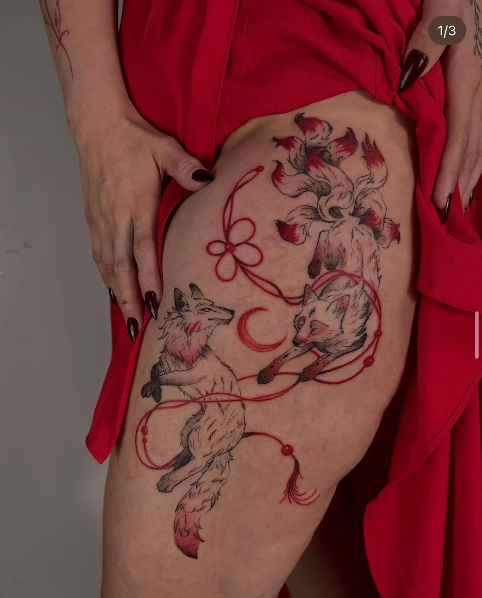
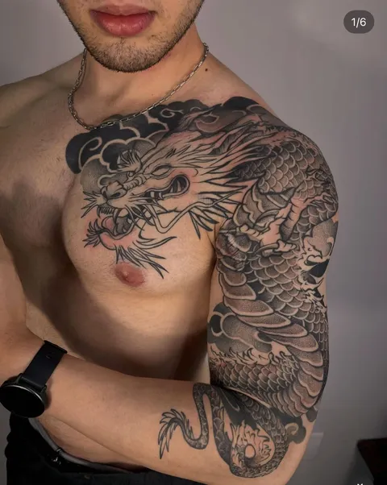
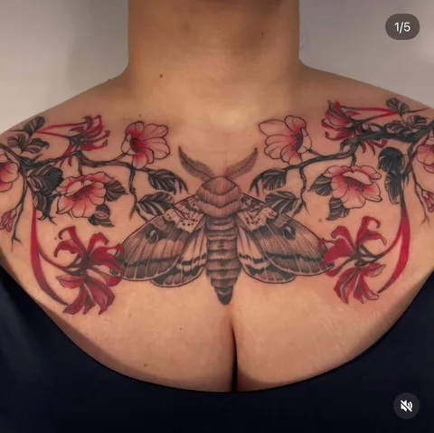
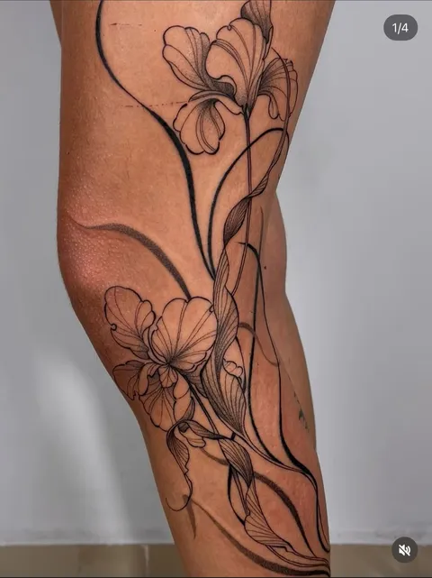
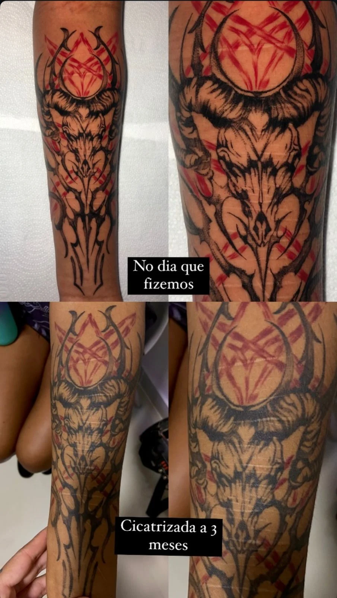

{kind=link}
{kind=link}
{kind=link}
{kind=link}
{kind=link}
{kind=link}
Vídeo a enviar
O desenho
As mãos desenhando no papel ou tablet. Enquadramento próximo, luz natural e movimento contínuo.
Vídeo vertical, de 6 a 10 segundos.
Tatuagem autoral
Símbolo, traço e corpo.
Uma composição sua.
Toque na tinta. Deixe seu gesto.
Anápolis, Goiânia e Brasília
Na pele
Oriental, blackwork, botânico e abstrato.
Toque em uma tatuagem para ler sobre ela e ver os detalhes.





Toque em uma obra para explorar o projeto.
Ver mais no InstagramPor trás do desenho
A linha acompanha o corpo.
O projeto começa em você.
O trabalho de Ítala atravessa o repertório oriental, a botânica, o blackwork e a abstração. A composição considera o desenho e o lugar que ele vai ocupar: as curvas, a extensão e o movimento de cada região.
Na primeira conversa, sua ideia encontra esse repertório. Referências ajudam a abrir caminhos para o projeto.
Dentro do ateliê
Ítala, estes espaços aguardam vídeos reais do seu processo. As orientações abaixo serão substituídas pelos vídeos quando os arquivos forem enviados.
As mãos desenhando no papel ou tablet. Enquadramento próximo, luz natural e movimento contínuo.
Vídeo vertical, de 6 a 10 segundos.A preparação ou aplicação do stencil, mostrando como o desenho encontra seu lugar no corpo.
Vídeo vertical, de 6 a 10 segundos.Um detalhe do seu trabalho durante a sessão, com enquadramento estável e autorização da pessoa tatuada.
Vídeo vertical, de 6 a 10 segundos.Da ideia à pele
Conte o que imagina, a região do corpo, o tamanho aproximado e a cidade. Não precisa ter um desenho pronto.
Referências, composição e anatomia entram na conversa para definir os caminhos do seu projeto.
Disponibilidade, etapas e cuidados são combinados com a artista. A cicatrização também faz parte do trabalho.

Vamos começar
Conte sua ideia. A mensagem vai para o WhatsApp da Ítala, onde vocês conversam sobre o projeto e a disponibilidade.
Prefiro conversar diretoAnápolis
Goiânia
Brasília
Não. Comece pela sua ideia. Referências são bem-vindas, mas não são obrigatórias para iniciar a conversa.
Esses detalhes são definidos com a artista a partir da ideia, tamanho, região do corpo e cidade informados.
Ítala atende em Anápolis, Goiânia e Brasília. Confirme a disponibilidade e o local para sua cidade no WhatsApp.